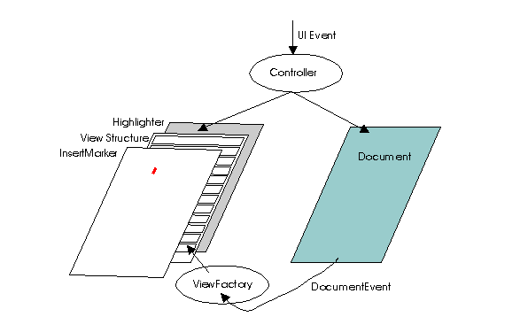

java.awt.Component
java.awt.Container
javax.swing.JComponent
javax.swing.text.JTextComponent
java.awt.Component
java.awt.Container
javax.swing.JComponent
javax.swing.text.JTextComponent
|
JavaTM Platform Standard Ed. 6 |
|||||||||
| 앞의 클래스 다음의 클래스 | 프레임 있어 프레임 없음 | |||||||||
| 개요 : 상자 | 필드 | 생성자 | 메소드 | 상세 : 필드 | 생성자 | 메소드 | |||||||||
java.lang.Object
public abstract class JTextComponent
JTextComponent 는, Swing 텍스트 컴퍼넌트의 base class입니다. java.awt.TextComponent 클래스와 어느 정도의 호환성이 있습니다. 또, 다른 서비스도 제공되고 있어 플러그 인 가능한 UI 나 Bean 의 지원 이외의 유연성도 있습니다. 이 클래스가 제공하는 기능의 사용법에 대해서는,「The Java Tutorial」의「General Rules for Using Text Components」를 참조해 주세요.
CaretListener 인터페이스의 구현에 보내집니다. UI 는, 커스터마이즈 한 caret가 설정이 끝난 상태가 아닌 한 디폴트의 caret를 인스톨 합니다. DefaultCaret 는, 자신을 표시하려고 합니다. 이 때문에,JScrollPane 내에서 텍스트 컴퍼넌트가 스크롤 되는 일이 있습니다. caret의 디폴트의 동작을 변경하려면 , DefaultCaret.setUpdatePolicy(int) 메소드를 사용합니다.
TextAction 의 구현을 사용해, swing Action 인터페이스의 형태로 표현됩니다. 텍스트 컴퍼넌트가 지원하는 커멘드 세트는,getActions() 메소드로 확인할 수 있습니다. 이러한 액션은, 버튼등에서 발생하는 키 이벤트에 할당할 수 있습니다.
Keymap 로, 어플리케이션을 사용해 키스트로크(keystroke)를 액션에 바인드 할 수 있습니다. 키 맵을 복수의 텍스트 컴퍼넌트로 공유하기 위해서,TextAction 를 확장하는 액션을 사용할 수 있습니다. TextAction 는, 어느 JTextComponent 가 포커스를 가지고 있어, 액션의 대상 (액션에 보내진 ActionEvent 가 타겟 텍스트 컴퍼넌트를 소스로서 포함하지 않은 경우)인지를 판정할 수 있습니다.
입력 메소드의 시스템 로, 텍스트 컴퍼넌트를 입력 메소드와 연결시킬 수가 있습니다. 이 입력 메소드는, 키의 꽤 적은 키보드를 사용해 몇천의 다른 문자를 사용자가 입력할 수 있도록(듯이) 하는 이벤트를 사전 처리 하는 개개의 소프트웨어 컴퍼넌트입니다. JTextComponent 는, 시스템의 「액티브 클라이언트」이기 (위해)때문에, 입력 메소드와 교환하기 위한 적절한 사용자 인터페이스를 구현합니다. 결과적으로, 키 이벤트안에는 입력 메소드에 의해 처리되기 (위해)때문에, 텍스트 컴퍼넌트에 도달하지 않는 것이 있습니다. 또, 텍스트 입력안에는, 키 이벤트로서가 아니게 InputMethodEvent 안의 확정 텍스트로서 텍스트 컴퍼넌트에 도달하는 것도 있습니다. 완전한 텍스트 입력이란,keyTyped 키 이벤트의 문자와 입력 메소드 이벤트의 확정 텍스트와의 편성입니다.
AWT 청취자 모델로, 어플리케이션을 사용해 이벤트를 액션에 바인드 하기 위해서 이벤트 청취자를 컴퍼넌트와 연결시킬 수가 있습니다. Swing 에서는, 청취자는 아니고 키 맵을 사용하는 것을 추천 하고 있습니다만, 이벤트를 소비하는 것으로써 그 이벤트를 횡령할 기회를 청취자에게 주는 것에 의해 청취자와의 호환성을 유지하고 있습니다.
키보드 이벤트와 입력 메소드 이벤트는, 다음의 공정으로 처리됩니다.
공정 |
KeyEvent |
InputMethodEvent |
|---|---|---|
| 1. | 입력 메소드 | (여기서 생성된다) |
| 2. | 포커스 매니저 | |
| 3. | 등록을 마친 키 청취자 | 등록을 마친 입력 메소드 청취자 |
| 4. | JTextComponent 로 처리하는 입력 메소드 | |
| 5. | 현재의 키 맵을 사용해 처리하는 키 맵 | |
| 6. | JComponent 로 처리하는 키보드 (가속기, 컴퍼넌트 네비게이션 등) | |
키 이벤트에는 대기하고 있지만, 입력 메소드 이벤트는 인식하지 않는 어플리케이션과의 호환성을 유지하기 (위해)때문에, 공정 4 로 처리하는 입력 메소드는, 입력 메소드를 처리하지 않는 컴퍼넌트를 위한 호환성을 제공하고 있습니다. 이러한 컴퍼넌트에서는, 확정 텍스트는 keyTyped 키 이벤트에 변환되어 입력 메소드의 이벤트 파이프라인은 아니고, 공정 3 으로 개시되는 키 이벤트 파이프라인으로 처리됩니다.
컴퍼넌트는 디폴트로, 모든 JTextComponent 의 인스턴스에 의해 디폴트 키 맵으로서 공유되는 키 맵 (DEFAULT_KEYMAP)을 작성합니다. ) 일반적으로, Look & Feel 의 구현은, 디폴트의 키 맵에 해결하는 다른 키 맵을 인스톨 해, 디폴트의 키 맵을, 다른 키 맵에는 없는 키 할당에 대응시킵니다. 다음에, 최소의 할당을 나타냅니다.

이 모델은 Document 인터페이스에 의해 정의됩니다. 이것은, 편집시로 변경을 추적하는 유연한 텍스트 기억 기구를 제공하기 위한의 것으로, 보다 고도의 모델에 확장할 수 있습니다. 모델 인터페이스는, SGML 가 제공하는 식의 기능, 즉 다양한 컨텐츠를 표현하는데 사용하는 시스템을 수중에 넣기 위한 것입니다. 문서에 가세하는 각 수정은, 뷰를 최신의 모델에 동기 할 수 있도록(듯이) 하는 DocumentEvent 라고 하는 형식에서 변경의 상세한 통지가 모든 옵저버에 보내집니다. 이 이벤트는,DocumentListener 인터페이스를 구현해 감시중의 모델에 전달 대상을 등록한 옵저버에 보내집니다.
modelToView(int) 과 viewToModel(java.awt.Point) 의 2 개의 메소드가 준비되어 있습니다.
UndoableEdit 레코드를 제공합니다. 그 지원는 Document 모델에 의해 제공됩니다. 그 지원는 Document 모델에 의해 제공됩니다. 이 모델에 의해, UndoableEditListener 의 구현의 추가가 가능하게 됩니다.
AbstractDocument 의 메뉴얼에서는 제공되는 보호의 전제 조건을 설명하고 있습니다. 비동기에 안전하게 호출할 수 있는 메소드에는, 코멘트를 붙일 수 있고 있습니다.
print 메소드가 준비되어 있습니다. 고도의 인쇄 처리가 필요한 경우는,getPrintable(java.text.MessageFormat, java.text.MessageFormat) 메소드를 사용합니다.
경고: 이 클래스의 직렬화 된 객체는, 향후의 Swing 릴리스와 호환은 아니게 될 예정입니다. 현재의 직렬화의 지원는, 단기간의 운용이나, 같은 버젼의 Swing 를 실행하는 어플리케이션간의 RMI 에 적절하고 있습니다. JDK Version 1.4 이후, 모든 JavaBeans™ 의 장기간의 운용 지원는,java.beans 패키지에 추가되고 있습니다. 자세한 것은,XMLEncoder 를 참조해 주세요.
Document ,
DocumentEvent ,
DocumentListener ,
Caret ,
CaretEvent ,
CaretListener ,
TextUI ,
View ,
ViewFactory | 상자의 클래스의 개요 | |
|---|---|
class |
JTextComponent.AccessibleJTextComponent
이 클래스는 JTextComponent 클래스용의 접근성? 지원를 구현하고 있습니다. |
static class |
JTextComponent.DropLocation
JTextComponent 의 드롭 위치를 나타냅니다. |
static class |
JTextComponent.KeyBinding
키 바인드 작성용의 레코드를 할당합니다. |
| 클래스 javax.swing. JComponent 로부터 상속된 상자의 클래스/인터페이스 |
|---|
JComponent.AccessibleJComponent |
| 클래스 java.awt. Container 로부터 상속된 상자의 클래스/인터페이스 |
|---|
Container.AccessibleAWTContainer |
| 클래스 java.awt. Component 로부터 상속된 상자의 클래스/인터페이스 |
|---|
Component.AccessibleAWTComponent , Component.BaselineResizeBehavior , Component.BltBufferStrategy , Component.FlipBufferStrategy |
| 필드의 개요 | |
|---|---|
static String |
DEFAULT_KEYMAP
다른 키 맵 세트를 가지고 있지 않는 이상 전 JTextComponent 인스턴스로 공유되는 디폴트의 키 맵입니다. |
static String |
FOCUS_ACCELERATOR_KEY
포커스 가속기의 바운드 프로퍼티명입니다. |
| 클래스 javax.swing. JComponent 로부터 상속된 필드 |
|---|
accessibleContext , listenerList , TOOL_TIP_TEXT_KEY , ui , UNDEFINED_CONDITION , WHEN_ANCESTOR_OF_FOCUSED_COMPONENT , WHEN_FOCUSED , WHEN_IN_FOCUSED_WINDOW |
| 클래스 java.awt. Component 로부터 상속된 필드 |
|---|
BOTTOM_ALIGNMENT , CENTER_ALIGNMENT , LEFT_ALIGNMENT , RIGHT_ALIGNMENT , TOP_ALIGNMENT |
| 인터페이스 java.awt.image. ImageObserver 로부터 상속된 필드 |
|---|
ABORT , ALLBITS , ERROR , FRAMEBITS , HEIGHT , PROPERTIES , SOMEBITS , WIDTH |
| 생성자 의 개요 | |
|---|---|
JTextComponent ()
새로운 JTextComponent 를 작성합니다. |
|
| 메소드의 개요 | |
|---|---|
void |
addCaretListener (CaretListener listener)
변경을 통지하기 위한 caret 청취자를 caret에 추가합니다. |
void |
addInputMethodListener (InputMethodListener l)
이 컴퍼넌트로부터 입력 메소드 이벤트를 받기 위해서(때문에), 지정된 입력 메소드 청취자를 추가합니다. |
static Keymap |
addKeymap (String nm,
Keymap parent)
새로운 키 맵을 키 맵 계층에 추가합니다. |
void |
copy ()
관련하는 텍스트 모델내의 현재 선택되고 있는 영역을 시스템 클립보드에 전송 해, 텍스트 모델내의 컨텐츠는 그대로 남깁니다. |
void |
cut ()
관련하는 텍스트 모델내의 현재 선택되고 있는 영역을 시스템 클립보드에 전송 해, 모델로부터 컨텐츠를 삭제합니다. |
protected void |
fireCaretUpdate (CaretEvent e)
통지의 전달 대상을, 지정된 이벤트형으로 등록한 모든 청취자에게 통지합니다. |
AccessibleContext |
getAccessibleContext ()
이 JTextComponent 에 관련한 AccessibleContext 를 가져옵니다. |
Action [] |
getActions ()
에디터의 커멘드 리스트를 꺼냅니다. |
Caret |
getCaret ()
뷰로 텍스트 지향 네비게이션을 가능하게 하는 caret를 꺼냅니다. |
Color |
getCaretColor ()
caret를 draw 하는데 사용하는 현재의 색을 꺼냅니다. |
CaretListener [] |
getCaretListeners ()
이 텍스트 컴퍼넌트에 등록된, 모든 caret 청취자로부터 되는 배열을 돌려줍니다. |
int |
getCaretPosition ()
텍스트 컴퍼넌트의 텍스트 삽입 caret의 위치를 돌려줍니다. |
Color |
getDisabledTextColor ()
무효로 한 텍스트를 draw 하기 위해서 사용하는 현재의 색을 가져옵니다. |
Document |
getDocument ()
에디터에 관련한 모델을 꺼냅니다. |
boolean |
getDragEnabled ()
자동 드래그 처리가 유효한지 어떤지를 돌려줍니다. |
JTextComponent.DropLocation |
getDropLocation ()
이 컴퍼넌트가 컴퍼넌트의 드래그＆드롭시에 드롭 위치로서 시각적으로 가리키는 위치를 돌려줍니다. |
DropMode |
getDropMode ()
이 컴퍼넌트의 드롭 모드를 돌려줍니다. |
char |
getFocusAccelerator ()
수신측 텍스트 컴퍼넌트에 포커스를 취득시키는 키 가속기를 돌려줍니다. |
Highlighter |
getHighlighter ()
하이라이트를 붙이는데 사용되는 객체를 꺼냅니다. |
InputMethodRequests |
getInputMethodRequests ()
이 컴퍼넌트의 입력 메소드로부터의 요구를 지원하는 입력 메소드 요구 핸들러를 돌려줍니다. |
Keymap |
getKeymap ()
이 텍스트 컴퍼넌트로 현재 액티브한 키 맵을 꺼냅니다. |
static Keymap |
getKeymap (String nm)
그때까지 문서에 추가되고 있던 이름 첨부 키 맵을 꺼냅니다. |
Insets |
getMargin ()
텍스트 컴퍼넌트의 경계와 그 텍스트의 사이의 마진을 돌려줍니다. |
NavigationFilter |
getNavigationFilter ()
NavigationFilter 를 돌려줍니다. |
Dimension |
getPreferredScrollableViewportSize ()
뷰콘포넨트의 뷰포트의 적절한 사이즈를 돌려줍니다. |
Printable |
getPrintable (MessageFormat headerFormat,
MessageFormat footerFormat)
이 JTextComponent 의 내용을 인쇄하기 위해서 사용하는 Printable 를 돌려줍니다. |
int |
getScrollableBlockIncrement (Rectangle visibleRect,
int orientation,
int direction)
논리행 또는 논리열을 표시하는 컴퍼넌트는, orientation 의 값에 의해, 1 블록 분의행 또는 열을 완전하게 에크스포즈 하는 스크롤 증분치를 계산합니다. |
boolean |
getScrollableTracksViewportHeight ()
뷰포트가 항상 이 Scrollable 의 높이를 강제적으로 뷰포트의 높이로 일치시키는 경우에 true 를 돌려줍니다. |
boolean |
getScrollableTracksViewportWidth ()
뷰포트가 항상 이 Scrollable 의 폭을 강제적으로 뷰포트의 폭에 일치시키는 경우에 true 를 돌려줍니다. |
int |
getScrollableUnitIncrement (Rectangle visibleRect,
int orientation,
int direction)
논리행 또는 논리열을 표시하는 컴퍼넌트는, orientation 의 값에 의해, 새로운 1 행 또는 1 열을 완전하게 에크스포즈 하는 스크롤 증분치를 계산합니다. |
String |
getSelectedText ()
이 TextComponent 에 포함된 선택되고 있는 텍스트를 돌려줍니다. |
Color |
getSelectedTextColor ()
선택한 텍스트를 draw 하는데 사용하는 현재의 색을 꺼냅니다. |
Color |
getSelectionColor ()
선택 영역을 draw 하는데 사용하는 현재의 색을 꺼냅니다. |
int |
getSelectionEnd ()
선택한 텍스트의 말미 위치를 돌려줍니다. |
int |
getSelectionStart ()
선택한 텍스트의 개시 위치를 돌려줍니다. |
String |
getText ()
이 TextComponent 에 포함된 텍스트를 돌려줍니다. |
String |
getText (int offs,
int len)
컴퍼넌트가 나타내는 텍스트의 일부를 꺼냅니다. |
String |
getToolTipText (MouseEvent event)
event 의 툴팁로서 사용되는 캐릭터 라인을 돌려줍니다. |
TextUI |
getUI ()
이 텍스트 지향 에디터의 사용자 인터페이스 팩토리를 꺼냅니다. |
boolean |
isEditable ()
이 TextComponent 가 편집 가능한가 어떤가를 나타내는 불형을 돌려줍니다. |
static void |
loadKeymap (Keymap map,
JTextComponent.KeyBinding [] bindings,
Action [] actions)
키 맵에 다수의 할당을 로드합니다. |
Rectangle |
modelToView (int pos)
모델내의 지정된 위치를, 뷰 좌표 체계내의 장소로 변환합니다. |
void |
moveCaretPosition (int pos)
caret를 새로운 위치로 이동해, setCaretPosition 가 전회 불려 갔을 때에 정의된 마크는 남겨 둡니다. |
protected String |
paramString ()
이 JTextComponent 의 캐릭터 라인 표현을 돌려줍니다. |
void |
paste ()
시스템 클립보드의 컨텐츠를 관련하는 텍스트 모델에 전송 합니다. |
boolean |
print ()
인쇄 다이얼로그를 표시해, 대화형 모드로, 헤더 텍스트 또는 풋터 텍스트를 지정하지 않고 이 JTextComponent 를 인쇄하는 간이 인쇄 메소드입니다. |
boolean |
print (MessageFormat headerFormat,
MessageFormat footerFormat)
인쇄 다이얼로그를 표시해, 대화형 모드로, 헤더 텍스트 및 풋터 텍스트를 지정해 이 JTextComponent 를 인쇄하는 간이 인쇄 메소드입니다. |
boolean |
print (MessageFormat headerFormat,
MessageFormat footerFormat,
boolean showPrintDialog,
PrintService service,
PrintRequestAttributeSet attributes,
boolean interactive)
이 JTextComponent 의 내용을 인쇄합니다. |
protected void |
processInputMethodEvent (InputMethodEvent e)
이 컴퍼넌트로 발생하는 입력 메소드 이벤트를, 등록되어 모든 InputMethodListener 객체에 발송 하는 것에 의해 처리합니다. |
void |
read (Reader in,
Object desc)
스트림로부터 초기화합니다. |
void |
removeCaretListener (CaretListener listener)
caret 청취자를 삭제합니다. |
static Keymap |
removeKeymap (String nm)
그때까지 문서에 추가되고 있던 이름 첨부 키 맵을 삭제합니다. |
void |
removeNotify ()
이 컴퍼넌트에 친컴퍼넌트가 없어진 것을, 이 컴퍼넌트에 통지합니다. |
void |
replaceSelection (String content)
현재 선택되고 있는 컨텐츠를, 건네받은 캐릭터 라인이 가리키는 새로운 컨텐츠로 옮겨놓습니다. |
void |
select (int selectionStart,
int selectionEnd)
지정된 시점과 종점의 사이에 있는 텍스트를 선택합니다. |
void |
selectAll ()
TextComponent 내의 모든 텍스트를 선택합니다. |
void |
setCaret (Caret c)
사용하는 caret를 설정합니다. |
void |
setCaretColor (Color c)
caret를 draw 하는데 사용하는 현재의 색을 설정합니다. |
void |
setCaretPosition (int position)
TextComponent 의 텍스트 삽입 caret의 위치를 설정합니다. |
void |
setComponentOrientation (ComponentOrientation o)
이 컴퍼넌트내의 요소 또는 텍스트를 정렬하기 위해서 사용한다, 언어에 의존할 방향을 설정합니다. |
void |
setDisabledTextColor (Color c)
무효로 한 텍스트를 draw 하는데 사용하는 현재의 색을 설정합니다. |
void |
setDocument (Document doc)
에디터를 텍스트 문서에 관련짓습니다. |
void |
setDragEnabled (boolean b)
자동 드래그 처리를 온 또는 오프로 합니다. |
void |
setDropMode (DropMode dropMode)
이 컴퍼넌트의 드롭 모드를 설정합니다. |
void |
setEditable (boolean b)
이 TextComponent 가 편집 가능한가 어떤가를 설정합니다. |
void |
setFocusAccelerator (char aKey)
수신측 텍스트 컴퍼넌트에 포커스를 취득시키는 키 가속기를 설정합니다. |
void |
setHighlighter (Highlighter h)
사용하는 하이 라이터를 설정합니다. |
void |
setKeymap (Keymap map)
이벤트를 액션에 할당하는데 사용하는 키 맵을 설정합니다. |
void |
setMargin (Insets m)
텍스트 컴퍼넌트의 경계와 그 텍스트의 사이의 마진 공백을 설정합니다. |
void |
setNavigationFilter (NavigationFilter filter)
NavigationFilter 를 설정합니다. |
void |
setSelectedTextColor (Color c)
선택한 텍스트를 draw 하는데 사용하는 현재의 색을 설정합니다. |
void |
setSelectionColor (Color c)
선택 영역을 draw 하는데 사용하는 현재의 색을 설정합니다. |
void |
setSelectionEnd (int selectionEnd)
선택 영역의 말미를, 지정된 위치로 설정합니다. |
void |
setSelectionStart (int selectionStart)
선택 개시를, 지정된 위치로 설정합니다. |
void |
setText (String t)
이 TextComponent 의 텍스트에, 지정된 텍스트를 설정합니다. |
void |
setUI (TextUI ui)
이 텍스트 지향 에디터의 사용자 인터페이스 팩토리를 설정합니다. |
void |
updateUI ()
플러그 인 가능한 UI 를 재로드합니다. |
int |
viewToModel (Point pt)
뷰 좌표 체계내의 지정된 장소를, 모델내의 가장 가까운 위치로 변환합니다. |
void |
write (Writer out)
모델의 컨텐츠를, 지정된 스트림에 포함합니다. |
| 클래스 java.lang. Object 로부터 상속된 메소드 |
|---|
clone , equals , finalize , getClass , hashCode , notify , notifyAll , wait , wait , wait |
| 필드의 상세 |
|---|
public static final String FOCUS_ACCELERATOR_KEY
public static final String DEFAULT_KEYMAP
JTextComponent 인스턴스로 공유되는 디폴트의 키 맵입니다.
| 생성자 의 상세 |
|---|
public JTextComponent()
JTextComponent 를 작성합니다. caret 이벤트의 청취자가 확립되어 플러그 인 가능한 UI 가 인스톨 됩니다. 컴퍼넌트는 편집 가능과 마크 됩니다. 배치는 텍스트의 뷰사브시스템에 의해 관리되므로, 레이아웃 매니저는 사용되지 않습니다. 문서 모델은 null 로 설정됩니다.
| 메소드의 상세 |
|---|
public TextUI getUI()
public void setUI(TextUI ui)
ui - 팩토리public void updateUI()
getUIClassID() 입니다. UI 의 타입은 TextUI 입니다. invalidate 는, UI 의 설정 후에 불려 갑니다.
JComponent 내의 updateUI JComponent.setUI(javax.swing.plaf.ComponentUI) ,
UIManager.getLookAndFeel() ,
UIManager.getUI(javax.swing.JComponent) public void addCaretListener(CaretListener listener)
listener - 추가되는 청취자CaretEvent public void removeCaretListener(CaretListener listener)
listener - 삭제되는 청취자CaretEvent public CaretListener [] getCaretListeners()
CaretListener,
변경 청취자가 현재 등록되지 않은 경우는
빈 상태(empty)의 배열addCaretListener(javax.swing.event.CaretListener) ,
removeCaretListener(javax.swing.event.CaretListener) protected void fireCaretUpdate(CaretEvent e)
e - 이벤트EventListenerList public void setDocument(Document doc)
doc - 표시 및 편집하는 문서getDocument() public Document getDocument()
public void setComponentOrientation(ComponentOrientation o)
Component 의 기술:LayoutManager 서브 클래스 및 Component 서브 클래스는 이 프로퍼티을 사용해 컴퍼넌트의 배치 방법 및 draw 방법을 결정합니다.
구축시에는, 컴퍼넌트의 방향은, 명시적으로 지정되어 있지 않은 것을 나타내는 ComponentOrientation.UNKNOWN 로 설정됩니다. UNKNOWN 의 방향의 동작은 ComponentOrientation.LEFT_TO_RIGHT 와 같습니다.
컴퍼넌트의 방향 결정을 단독으로 실시하는 경우는 이 메소드를 사용합니다. 컴퍼넌트 계층 전체의 방향을 결정하는 경우는,applyComponentOrientation 를 사용합니다.
Component 내의 setComponentOrientation ComponentOrientation public Action [] getActions()
public void setMargin(Insets m)
Border 객체는, 이 값을 사용해 적절한 마진을 작성합니다. 다만, 디폴트 이외의 경계가 설정되어 있는 경우는,Border 객체가 적절한 마진 공백을 작성합니다. (그 이외의 경우, 이 프로퍼티은 사실상 무시된다). 이 때문에, 컴퍼넌트의 재draw를 합니다. PropertyChange 이벤트 (margin)는 모든 청취자에게 보내집니다.
m - 경계와 텍스트의 사이의 마진public Insets getMargin()
public void setNavigationFilter(NavigationFilter filter)
NavigationFilter 를 설정합니다. NavigationFilter 는 DefaultCaret 와 커서의 이동을 한정하는 디폴트의 커서 이동 처리로 사용됩니다.
public NavigationFilter getNavigationFilter()
NavigationFilter 를 돌려줍니다. NavigationFilter 는 DefaultCaret 와 커서의 이동을 한정하는 디폴트의 커서 이동 처리로 사용됩니다. 반환값의 null 는 커서의 이동과 선택이 제한되지 않는 것을 나타냅니다.
public Caret getCaret()
public void setCaret(Caret c)
c - caretgetCaret() public Highlighter getHighlighter()
public void setHighlighter(Highlighter h)
null 로 설정합니다. 새로운 하이 라이터가 인스톨 되면(자), PropertyChange 이벤트 (highlighter)가 발생합니다.
h - 하이 라이터getHighlighter() public void setKeymap(Keymap map)
null 로 설정하면(자), 키보드 입력이 사실상 무효가 됩니다. 새로운 키 맵을 인스톨 하면(자), PropertyChange 이벤트 (keymap)가 발생합니다.
map - 키 맵getKeymap() public void setDragEnabled(boolean b)
true 로 설정해, 컴퍼넌트의 TransferHandler 의 값을 null 이외 로 해 주세요. dragEnabled 프로퍼티의 디폴트 값는 false 입니다.
이 프로퍼티을 받아들여 사용자의 드래그 제스처(gesture)를 인식하는 처리는, Look & Feel 구현 (특히 컴퍼넌트의 TextUI)에 의해 행해집니다. 자동 드래그 처리가 유효한 경우, 대부분의 Look & Feel (BasicLookAndFeel 의 서브 클래스의 Look & Feel 를 포함한다)는, 사용자가 선택 항목 위에서 mouse button를 눌러, 마우스를 수픽셀 이동하면(자), 드래그＆드롭 조작을 개시합니다. 따라서, 이 프로퍼티을 true 로 설정하면(자), 선택의 동작에 미묘한 효과가 있습니다.
이 프로퍼티을 무시하는 것 같은 Look & Feel 를 사용하고 있는 경우도, 컴퍼넌트의 TransferHandler 상에서 exportAsDrag 를 호출하는 것으로, 드래그＆드롭 조작을 개시할 수 있습니다.
b - 자동 드래그 처리를 유효하게 할지 어떨지
HeadlessException - b 가 true 의 경우로 GraphicsEnvironment.isHeadless() 이 true 를 돌려주는 경우GraphicsEnvironment.isHeadless() ,
getDragEnabled() ,
JComponent.setTransferHandler(javax.swing.TransferHandler) ,
TransferHandler public boolean getDragEnabled()
dragEnabled 프로퍼티의 값setDragEnabled(boolean) public final void setDropMode(DropMode dropMode)
DropMode.USE_SELECTION 가 되어 있습니다. 다만, 사용자 경험을 개선하고 싶은 경우는,DropMode.INSERT 의 사용을 추천합니다. DropMode.INSERT 에서는, 텍스트가 있는 위치로부터 다른 위치에의 드롭과 자주(잘) 닮은 조작을 실행할 수 있습니다만, 현재 선택하고 있는 텍스트와 caret 위치에 영향은 없습니다.
JTextComponents 는 다음의 드롭 모드를 지원하고 있습니다.
DropMode.USE_SELECTIONDropMode.INSERT
이 컴퍼넌트가 드롭을 받아들이는 TransferHandler 를 가지고 있지 않으면, 드롭 모드의 효과는 없습니다.
dropMode - 사용하는 드롭 모드
IllegalArgumentException - 드롭 모드가 지원되어 있지 않은가 null 의 경우getDropMode() ,
getDropLocation() ,
JComponent.setTransferHandler(javax.swing.TransferHandler) ,
TransferHandler public final DropMode getDropMode()
setDropMode(javax.swing.DropMode) public final JTextComponent.DropLocation getDropLocation()
null 를 돌려줍니다.
이 메소드는,TransferHandler 로부터 드롭 위치를 조회하는 수단으로는 되지 않습니다. 드롭 위치는,TransferHandler 의 canImport 가 돌려주어져 드롭 위치를 표시할 준비를 할 수 있고 나서 설정되기 때문입니다.
이 프로퍼티이 변경되면(자), 컴퍼넌트에 의해, 프로퍼티 변경 이벤트 dropLocation 가 트리거됩니다.
setDropMode(javax.swing.DropMode) ,
TransferHandler.canImport(TransferHandler.TransferSupport) public Keymap getKeymap()
public static Keymap addKeymap(String nm,
Keymap parent)
nm - 키 맵의 이름. 문서내의 이름 첨부 키 맵의 컬렉션 중(안)에서 일의일 필요가 있다.
키 맵에 이름을 지정하지 않는 경우,
이름은 null 에서도 상관없다.
다만, 이름 없음의 키 맵은 이름을 지정해 취득할 수가 없기 때문에,
반환된 참조의 관리는
호출측에서 실시하는parent - 친키 맵. 미지정의 할당을 다른 특정의 키 맵으로 해석 처리할 필요가 없는 경우는,null
(을)를 설정할 수 있다
public static Keymap removeKeymap(String nm)
null 인 키 맵은, 이 방법에서는 삭제할 수 없습니다.
nm - 삭제하는 키 맵의 이름
public static Keymap getKeymap(String nm)
null 인 키 맵은 취급하지 않습니다.
nm - 키 맵의 이름
public static void loadKeymap(Keymap map,
JTextComponent.KeyBinding [] bindings,
Action [] actions)
키 맵에 다수의 할당을 로드합니다. 이 메소드를 사용하면(자), 정의의 스태틱 테이블을 취득해 특정의 키 맵에 로드할 수 있습니다. 다음에, 몇개의 키를 JtextComponent 에 관련한 컷, 카피, 페이스트의 각 액션에 할당하는 예를 나타냅니다. 이것을 실행하는 코드는, 다음과 같습니다 (발췌).
static final JTextComponent.KeyBinding[] defaultBindings = {
new JTextComponent.KeyBinding(
KeyStroke.getKeyStroke(KeyEvent.VK_C, InputEvent.CTRL_MASK),
DefaultEditorKit.copyAction),
new JTextComponent.KeyBinding(
KeyStroke.getKeyStroke(KeyEvent.VK_V, InputEvent.CTRL_MASK),
DefaultEditorKit.pasteAction),
new JTextComponent.KeyBinding(
KeyStroke.getKeyStroke(KeyEvent.VK_X, InputEvent.CTRL_MASK),
DefaultEditorKit.cutAction),
};
JTextComponent c = new JTextPane();
Keymap k = c.getKeymap();
JTextComponent.loadKeymap(k, defaultBindings, c.getActions());
null 에는 할 수 없습니다.
map - 키 맵bindings - 바인딩actions - 액션세트public Color getCaretColor()
public void setCaretColor(Color c)
null 로 설정하면(자), 효과적으로 디폴트의 색을 복원합니다. 색을 설정하면(자), PropertyChange 이벤트 (caretColor)가 발생합니다.
c - 색getCaretColor() public Color getSelectionColor()
public void setSelectionColor(Color c)
null 를 설정하는 것은,Color.white 를 설정하는 것과 같습니다. 색을 설정하면(자), PropertyChange 이벤트 (selectionColor)가 발생합니다.
c - 색getSelectionColor() public Color getSelectedTextColor()
public void setSelectedTextColor(Color c)
null 를 설정하는 것은,Color.black 를 설정하는 것과 같습니다. 색을 설정하면(자), PropertyChange 이벤트 (selectedTextColor)가 발생합니다.
c - 색getSelectedTextColor() public Color getDisabledTextColor()
public void setDisabledTextColor(Color c)
c - 색getDisabledTextColor() public void replaceSelection(String content)
이 메소드는, 키 맵 액션에 할당할 수 있는 컨텐츠를 삽입하는 액션의 디폴트 구현에 의해 사용됩니다.
이 메소드는 thread에 대해서 안전합니다만, 대부분의 Swing 메소드는 다릅니다. 자세한 것은,「How to Use Threads」를 참조해 주세요.
content - 선택 범위를 옮겨놓는 컨텐츠
public String getText(int offs,
int len)
throws BadLocationException
offs - 오프셋(offset) >= 0len - 길이 >= 0
BadLocationException - 오프셋(offset) 또는 길이가 무효인 경우
public Rectangle modelToView(int pos)
throws BadLocationException
pos - 위치 >= 0
BadLocationException - 지정된 위치가, 관련하는 문서내의
유효한 위치를 나타내지 않는 경우TextUI.modelToView(javax.swing.text.JTextComponent, int) public int viewToModel(Point pt)
pt - 변환하는 뷰내의 위치
TextUI.viewToModel(javax.swing.text.JTextComponent, java.awt.Point) public void cut()
null 의 경우에는 아무것도 실시하지 않습니다.
Toolkit.getSystemClipboard() ,
Clipboard public void copy()
null 의 경우에는 아무것도 실시하지 않습니다.
Toolkit.getSystemClipboard() ,
Clipboard public void paste()
replaceSelection(java.lang.String) ,
Toolkit.getSystemClipboard() ,
Clipboard public void moveCaretPosition(int pos)
setCaretPosition 가 전회 불려 갔을 때에 정의된 마크는 남겨 둡니다. 이 메소드는, 선택 영역을 형성합니다. 문서가 null 의 경우에는 아무것도 실시하지 않습니다. 위치는 0 으로 컴퍼넌트 텍스트의 길이와의 사이가 아니면 안되어, 그렇지 않은 경우는 예외가 throw 됩니다.
pos - 위치
IllegalArgumentException - position 로 지정한 값이 0 미만, 또는 컴퍼넌트 텍스트보다 긴 경우setCaretPosition(int) public void setFocusAccelerator(char aKey)
aKey - 키getFocusAccelerator() public char getFocusAccelerator()
public void read(Reader in,
Object desc)
throws IOException
in - read원의 스트림desc - 스트림을 기술하는 객체. String, File, URL 등. 어떤 종류의 문서 (예를 들어 HTML)는, 이 정보를 이용할 수 있는 경우가 있다. null 이외의 경우, 문서의 프로퍼티으로서 추가된다
IOException - 초기화에 사용되는 스트림에 의해
throw 되는EditorKit.createDefaultDocument() ,
setDocument(javax.swing.text.Document) ,
PlainDocument
public void write(Writer out)
throws IOException
out - 출력 스트림
IOException - 입출력 에러가 발생했을 경우public void removeNotify()
JComponent 의 기술:KeyboardAction 가 삭제됩니다.
JComponent 내의 removeNotify JComponent.registerKeyboardAction(java.awt.event.ActionListener, java.lang.String, javax.swing.KeyStroke, int) public void setCaretPosition(int position)
TextComponent 의 텍스트 삽입 caret의 위치를 설정합니다. caret는 변경을 추적하므로, 컴퍼넌트의 기본이 되는 텍스트가 변경와 이것도 이동하는 것에 주의해 주세요. 문서가 null 의 경우에는 아무것도 실시하지 않습니다. 위치는 0 으로 컴퍼넌트 텍스트의 길이와의 사이가 아니면 안되어, 그렇지 않은 경우는 예외가 throw 됩니다.
position - 위치
IllegalArgumentException - position 로 지정한 값이 0 미만, 또는 컴퍼넌트 텍스트보다 긴 경우public int getCaretPosition()
public void setText(String t)
TextComponent 의 텍스트에, 지정된 텍스트를 설정합니다. 텍스트가 null 또는 빈 상태(empty)의 경우는, 낡은 텍스트를 단지 삭제하는 효과가 있습니다. 텍스트가 삽입되었을 때에 결과적으로 얻을 수 있는 caret 위치는, caret 클래스의 구현에 의해 결정됩니다.
이 메소드는 thread에 대해서 안전합니다만, 대부분의 Swing 메소드는 다릅니다. 자세한 것은,「How to Use Threads」를 참조해 주세요.
텍스트는 바운드 프로퍼티은 아니기 때문에, 그것이 변경되어도 PropertyChangeEvent 는 트리거되지 않습니다. 텍스트의 변경을 대기하려면 ,DocumentListener 를 사용해 주세요.
t - 설정하는 새로운 텍스트getText(int, int) ,
DefaultCaret public String getText()
TextComponent 에 포함된 텍스트를 돌려줍니다. 기본이 되는 문서가 null 의 경우는,NullPointerException 를 돌려줍니다.
텍스트는 바운드 프로퍼티은 아니기 때문에, 그것이 변경되어도 PropertyChangeEvent 는 트리거되지 않습니다. 텍스트의 변경을 대기하려면 ,DocumentListener 를 사용해 주세요.
NullPointerException - 문서가 null 의 경우setText(java.lang.String) public String getSelectedText()
TextComponent 에 포함된 선택되고 있는 텍스트를 돌려줍니다. 선택 영역이 null 인지, 문서가 빈 상태(empty)의 경우는,null 를 돌려줍니다.
IllegalArgumentException - 선택 영역이 하등의 이유로써
문서에의 유효한 매핑을 가지지 않는 경우setText(java.lang.String) public boolean isEditable()
TextComponent 가 편집 가능한가 어떤가를 나타내는 불형을 돌려줍니다.
setEditable(boolean) public void setEditable(boolean b)
TextComponent 가 편집 가능한가 어떤가를 설정합니다. 상태가 변경되면(자), PropertyChange 이벤트 (editable)가 발생합니다.
b - 설정되는 booleanisEditable() public int getSelectionStart()
public void setSelectionStart(int selectionStart)
이것은, 이 메소드를 java.awt.TextComponent 로 호출한 코드에 대한 하위 호환에 도움이 됩니다. 이것을 구현하면(자), 실제의 선택 영역이 관리되고 있는 장소인 Caret 의 구현에 전송 할 수 있습니다.
selectionStart - 텍스트의 개시 위치 >= 0public int getSelectionEnd()
public void setSelectionEnd(int selectionEnd)
이것은, 이 메소드를 java.awt.TextComponent 로 호출한 코드에 대한 하위 호환에 도움이 됩니다. 이것을 구현하면(자), 실제의 선택 영역이 관리되고 있는 장소인 Caret 의 구현에 전송 할 수 있습니다.
selectionEnd - 텍스트의 말미 위치 >= 0
public void select(int selectionStart,
int selectionEnd)
이 메소드는 선택 텍스트의 시점과 종점을 설정합니다. 시점은 0 이상이 아니면 안된다고 하는 제약이 적용됩니다. 종점은 시점과 같은가, 그것보다 큰 값이 아니면 안되어, 또 텍스트 컴퍼넌트의 텍스트의 길이에 동일한지, 그것보다 짧지 않으면 안됩니다.
호출측이 일관성의 없는 값 또는 경계외의 값을 지정했을 경우, 메소드는 메세지를 표시하지 않고 , 이러한 제약을 적용합니다. 구체적으로는, 시점 또는 종점이 텍스트의 길이를 넘는 경우, 텍스트와 같은 길이로 다시 설정합니다. 시점이 제로보다 작은 경우, 제로로 다시 설정합니다. 종점이 시점보다 작은 경우, 시점으로 다시 설정합니다.
이 호출은, 하위 호환을 위해서(때문에) 제공되고 있습니다. 이것은,setCaretPosition 의 호출에 회송되어 거기에 moveCaretPostion 의 호출이 계속됩니다. 선택 영역을 관리하는 바람직한 방법은, 이러한 메소드를 직접 호출하는 것입니다.
selectionStart - 텍스트의 시점selectionEnd - 텍스트의 종점setCaretPosition(int) ,
moveCaretPosition(int) public void selectAll()
TextComponent 내의 모든 텍스트를 선택합니다. null 또는 빈 상태(empty)의 문서에서는 아무것도 실시하지 않습니다.
public String getToolTipText(MouseEvent event)
event 의 툴팁로서 사용되는 캐릭터 라인을 돌려줍니다. 반환되는 것은 다음의 머지않아인가입니다.
null 이외의 값으로 setToolTipText 가 불려 가면(자), 그 값이 반환된다. 그렇지 않은 경우는
getToolTipText 의 호출에 의한 값이 반환된다
JTextComponent 가 ToolTipManager 로 등록될 것은 없습니다. 이것은,registerComponent 가 ToolTipManager 상에서 불려 가지 않는 이상 툴팁는 TextUI 로부터 표시되지 않는 것을 의미합니다.
JComponent 내의 getToolTipText event - 해당의 이벤트
event 의 툴팁로서 사용되는 캐릭터 라인JComponent.setToolTipText(java.lang.String) ,
TextUI.getToolTipText(javax.swing.text.JTextComponent, java.awt.Point) ,
ToolTipManager.registerComponent(javax.swing.JComponent) public Dimension getPreferredScrollableViewportSize()
Scrollable 내의 getPreferredScrollableViewportSize Scrollable 를 뷰로서 가지는 JViewport 의
preferredSizeJComponent.getPreferredSize()
public int getScrollableUnitIncrement(Rectangle visibleRect,
int orientation,
int direction)
이 디폴트 구현은, 단순하게 가시 영역의 10% 를 돌려줍니다. 서브 클래스는, 더 한층 적정한 값을 제공할 수 있습니다.
Scrollable 내의 getScrollableUnitIncrement visibleRect - 뷰포트내의 가시의 뷰 영역orientation - SwingConstants.VERTICAL 또는 SwingConstants.HORIZONTALdirection - 상또는왼쪽으로 스크롤 하는 경우는 0 보다 작은 값,
아래 또는 오른쪽으로 스크롤 하는 경우는 제로보다 큰 값
IllegalArgumentException - 방향이 무효인 경우JScrollBar.setUnitIncrement(int)
public int getScrollableBlockIncrement(Rectangle visibleRect,
int orientation,
int direction)
이 디폴트 구현은, 단순하게 가시 영역을 돌려줍니다. 서브 클래스는, 더 한층 적정한 값을 제공할 수 있습니다.
Scrollable 내의 getScrollableBlockIncrement visibleRect - 뷰포트내의 가시의 뷰 영역orientation - SwingConstants.VERTICAL 또는 SwingConstants.HORIZONTALdirection - 상또는왼쪽으로 스크롤 하는 경우는 0 보다 작고, 아래 또는 오른쪽으로 스크롤 하는 경우는 0 보다 크다
IllegalArgumentException - 방향이 무효인 경우JScrollBar.setBlockIncrement(int) public boolean getScrollableTracksViewportWidth()
Scrollable 의 폭을 강제적으로 뷰포트의 폭에 일치시키는 경우에 true 를 돌려줍니다. 예를 들어, 즉시 행이 뷰포트의 우단을 넘어 사라져 버리는 것 같은 것은 무례해서, 행 반환을 지원한 일반적으로의 테키스트뷰는 여기서 true 를 돌려줍니다. 상위 클래스에 JScrollPane 를 가지는 Scrollable 에 true 를 돌려주면(자), 수평 스크롤이 사실상 무효가 되는 것에 주의해 주세요.
JViewport 등의 스크롤 컨테이너는, 검증되는 곳의 메소드를 사용합니다.
Scrollable 내의 getScrollableTracksViewportWidth Scrollable 의 폭을 강제적으로
뷰포트의 폭에 일치시키는 경우는 truepublic boolean getScrollableTracksViewportHeight()
Scrollable 의 높이를 강제적으로 뷰포트의 높이로 일치시키는 경우에 true 를 돌려줍니다. 예를 들어, 왼쪽에서 오른쪽의 열에 텍스트를 표시하는 단나누기의 테키스트뷰의 경우, 이 메소드로 true 를 돌려주면(자), 수직 방향의 스크롤이 결과적으로 무효가 됩니다.
JViewport 등의 스크롤 컨테이너는, 검증되는 곳의 메소드를 사용합니다.
Scrollable 내의 getScrollableTracksViewportHeight
public boolean print()
throws PrinterException
JTextComponent 를 인쇄하는 간이 인쇄 메소드입니다. 주:이 메소드는 인쇄가 완료할 때까지 블록 됩니다. 주:헷드레스모드에서는, 다이얼로그는 표시되지 않습니다.
이 메소드는, 인쇄의 실행시에, 완전한 기능을 갖춘 print 메소드를 호출합니다.
true
PrinterException - 인쇄 시스템의 에러가 원인으로 작업이 정지했을 경우
SecurityException - 인쇄 작업 요구의 개시가 이 thread에 허가되어 있지 않은 경우print(MessageFormat, MessageFormat, boolean, PrintService, PrintRequestAttributeSet, boolean)
public boolean print(MessageFormat headerFormat,
MessageFormat footerFormat)
throws PrinterException
JTextComponent 를 인쇄하는 간이 인쇄 메소드입니다. 주:이 메소드는 인쇄가 완료할 때까지 블록 됩니다. 주:헷드레스모드에서는, 다이얼로그는 표시되지 않습니다.
이 메소드는, 인쇄의 실행시에, 완전한 기능을 갖춘 print 메소드를 호출합니다.
headerFormat - 헤더로서 사용되는 텍스트 (MessageFormat 형식).
헤더가 없는 경우는 nullfooterFormat - 풋터로서 사용되는 텍스트 (MessageFormat 형식).
풋터가 없는 경우는 null
true
PrinterException - 인쇄 시스템의 에러가 원인으로 작업이 정지했을 경우
SecurityException - 인쇄 작업 요구의 개시가 이 thread에 허가되어 있지 않은 경우print(MessageFormat, MessageFormat, boolean, PrintService, PrintRequestAttributeSet, boolean) ,
MessageFormat
public boolean print(MessageFormat headerFormat,
MessageFormat footerFormat,
boolean showPrintDialog,
PrintService service,
PrintRequestAttributeSet attributes,
boolean interactive)
throws PrinterException
JTextComponent 의 내용을 인쇄합니다. 주:이 메소드는 인쇄가 완료할 때까지 블록 됩니다.
MessageFormat 인수를 지정해, 헤더 텍스트와 풋터 텍스트를 출력에 추가할 수가 있습니다. 인쇄 코드는, 그러한 형식으로부터 Strings 를 요구해, 서식 첨부 캐릭터 라인에 포함되는 단일의 항목 (현재의 페이지 번호를 나타내는 Integer)을 제공합니다.
{@code showPrintDialog boolean} 파라미터를 사용하면(자), 인쇄 다이얼로그가 사용자에게 표시될지 어떨지를 지정할 수 있습니다. 다이얼로그가 표시되면(자), 사용자는 그것을 사용해 인쇄 속성을 변경하거나 인쇄를 취소하거나 할 수가 있습니다.
{@code service} 에서는, 인쇄 다이얼로그의 초기치 {@code PrintService} 나, 다이얼로그가 표시되지 않을 때에 인쇄하는 {@code PrintService} 를 지정할 수가 있습니다.
{@code 속성}은, 인쇄 다이얼로그의 초기치를 지정하거나 다이얼로그가 표시되지 않을 때에 필요한 속성을 제공하기 위해서 사용할 수 있습니다. {@code 속성}을 사용해, 작업의 인쇄 방법 (양면 또는 한 면)을 제어할 수가 있습니다.
{@code interactive boolean} 파라미터에서는, 인쇄를 대화형 모드로 실시할지 어떨지를 지정할 수 있습니다. {@code true} 의 경우, 인쇄중에 중지 옵션 첨부의 진척 다이얼로그가 표시됩니다. 이 다이얼로그는, 벤트발송쓰레드상에서{@code 인쇄}를 실시하는 경우는 모덜, 그 이외의 경우는 비모덜입니다. 경고:이벤트발송쓰레드상에서,{@code interactive 파라미터에 false} 를 지정해 이 메소드를 호출하면(자), 인쇄가 완료할 때까지, 재페인트를 포함한 모든 이벤트의 처리가 중단됩니다. 표시할 수 있는 GUI 가 없는 어플리케이션으로부터 인쇄할 경우에 마셔 false 를 지정하는 것을 추천합니다.
주:헷드레스모드에서는,{@code showPrintDialog} 파라미터와 {@code interactive} 파라미터가 무시되기 (위해)때문에, 다이얼로그는 표시되지 않습니다.
이 메소드를 사용하면(자), 인쇄중에{@code 문서}가 변경될 걱정이 없습니다. 시각적으로 지정하려면 , 인쇄중에 {@code setEnabled(false)} 를 설정합니다.
이 메소드는,{@link #getPrintable} 를 사용해 문서의 내용을 draw 합니다.
이 메소드는 thread에 대해서 안전합니다만, 대부분의 Swing 메소드는 다릅니다. 자세한 것은,「How to Use Threads」를 참조해 주세요.
사용예. 다음의 코드의 발췌는, 크로스 플랫폼형의 인쇄 다이얼로그를 표시해, 대화형 모드로 {@code JTextComponent} 를 인쇄합니다 (다만 사용자가 인쇄 다이얼로그를 취소했을 경우를 제외하다).
textComponent.print(new MessageFormat("My text component header"),
new MessageFormat("Footer.Page - {0}"), true, null, null, true);
이벤트발송쓰레드 이외로 이 코드를 실행하면(자), 백그라운드에서 인쇄를 합니다. 후면 인쇄에서는, 다음의 패턴이 사용되는 일이 있습니다.
FutureTask<Boolean> future =
new FutureTask<Boolean>(
new Callable<Boolean>() {
public Boolean call() {
return textComponent.print(.....);
}
});
executor.execute(future);
headerFormat - 헤더로서 사용되는 텍스트 (MessageFormat 형식).
헤더가 없는 경우는 nullfooterFormat - 풋터로서 사용되는 텍스트 (MessageFormat 형식).
풋터가 없는 경우는 nullshowPrintDialog - 인쇄 다이얼로그를 표시하는 경우는 true,
그렇지 않은 경우는 falseservice - 초기 PrintService, 디폴트의 경우는 nullattributes - 인쇄 작업에 적용되는 작업 속성. 아무것도 적용하지 않는 경우는 nullinteractive - 대화형 모드로 인쇄할지 어떨지
true
PrinterException - 인쇄 시스템의 에러가 원인으로 작업이 정지했을 경우
SecurityException - 인쇄 작업 요구의 개시가 이 thread에 허가되어 있지 않은 경우getPrintable(java.text.MessageFormat, java.text.MessageFormat) ,
MessageFormat ,
GraphicsEnvironment.isHeadless() ,
FutureTask
public Printable getPrintable(MessageFormat headerFormat,
MessageFormat footerFormat)
JTextComponent 의 내용을 인쇄하기 위해서 사용하는 Printable 를 돌려줍니다. 반환되는 Printable 는, 용지의 사이즈에 맞추어, 화면에 표시했던 대로 문서를 인쇄합니다. 복잡한 리포트나 문서를 작성하는 경우는, 반환되는 Printable 를 다른 Printable 에 랩 할 수도 있습니다.
반환되는 Printable 는, 이 JTextComponent 와문서를 공유합니다. 개발자가 책임을 가져, 이 Printable 의 사용중으로문서가 변경되지 않게 합니다. 인쇄중으로문서가 변경되면(자), 인쇄 동작은 보증되지 않습니다.
MessageFormat 인수를 지정해, 헤더 텍스트와 풋터 텍스트를 출력에 추가할 수가 있습니다. 인쇄 코드는, 그러한 형식으로부터 Strings 를 요구해, 서식 첨부 캐릭터 라인에 포함되는 단일의 항목 (현재의 페이지 번호를 나타내는 Integer)을 제공합니다.
인쇄시에 반환되는 {@code Printable} 는, 페이지 사이즈에 맞추어 문서의 내용의 서식 설정을 실시합니다. 행 반환을 적절히 실시하기 위해서(때문에)는, 전페이지의{@code 이미징 가능 영역의 폭}을 같게 할 필요가 있습니다. {@link java.awt.print.PageFormat#getImageableWidth} 를 참조해 주세요.
이 메소드는 thread에 대해서 안전합니다만, 대부분의 Swing 메소드는 다릅니다. 자세한 것은,「How to Use Threads」를 참조해 주세요.
반환되는 {@code Printable} 는, 어느 thread상에서도 인쇄할 수 있습니다.
이 구현이 반환되는 {@code Printable} 는, 어느 thread상에서 사용되고 있을까에 관계없이, 이벤트발송쓰레드상의 모든 페인트를 실행합니다.
headerFormat - 헤더로서 사용되는 텍스트 (MessageFormat 형식).
헤더가 없는 경우는 nullfooterFormat - 풋터로서 사용되는 텍스트 (MessageFormat 형식).
풋터가 없는 경우는 null
JTextComponent 의 내용을 인쇄하기 위해서 사용한다
PrintablePrintable ,
PageFormat ,
Document.render(java.lang.Runnable) public AccessibleContext getAccessibleContext()
JTextComponent 에 관련한 AccessibleContext 를 가져옵니다. 텍스트 컴퍼넌트의 경우,AccessibleContext 는 AccessibleJTextComponent 의 형식을 취합니다. 필요에 따라서 신규의 AccessibleJTextComponent 인스턴스가 작성됩니다.
Accessible 내의 getAccessibleContext JComponent 내의 getAccessibleContext JTextComponent 의
AccessibleContext 로서 기능한다
JTextComponentprotected String paramString()
JTextComponent 의 캐릭터 라인 표현을 돌려줍니다. 이 메소드는 디버그 전용이며, 반환되는 캐릭터 라인의 내용 및 형식은 구현에 따라서 다릅니다. 반환되는 캐릭터 라인은 빈 상태(empty)의 경우가 있습니다만,null 로는 되지 않습니다.
JFC 컴퍼넌트의 특정의 새로운 측면에 대한 정보를 제공하려면 ,paramString 를 오버라이드(override) 합니다.
JComponent 내의 paramString JTextComponent 의 캐릭터 라인 표현protected void processInputMethodEvent(InputMethodEvent e)
Component 의 기술:InputMethodListener 객체에 발송 하는 것에 의해 처리합니다. 이 컴퍼넌트에 대해서 입력 메소드 이벤트가 사용 가능하지 않은 경우, 이 메소드는 불려 가지 않습니다. 입력 메소드 이벤트는, 다음의 몇개의 경우에 사용 가능하게 됩니다.
InputMethodListener 객체가 addInputMethodListener 에 의해 등록되어 있다
enableEvents 에 의해 입력 메소드 이벤트가 사용 가능하게 되어 있다
이벤트 파라미터가 null 의 경우의 동작은 정의되어 있지 않기 때문에 예외가 throw 됩니다.
Component 내의 processInputMethodEvent e - 입력 메소드 이벤트InputMethodEvent ,
InputMethodListener ,
Component.addInputMethodListener(java.awt.event.InputMethodListener) ,
Component.enableEvents(long) public InputMethodRequests getInputMethodRequests()
Component 의 기술:InputMethodRequests 의 인스턴스를 돌려주기 위해서(때문에)는 이 메소드를 오버라이드(override) 할 필요가 있습니다. 동시에, 입력 메소드 이벤트를 처리할 필요도 있습니다.
Component 내의 getInputMethodRequests nullComponent.addInputMethodListener(java.awt.event.InputMethodListener) public void addInputMethodListener(InputMethodListener l)
Component 의 기술:InputMethodRequests 의 인스턴스를 돌려주도록(듯이) getInputMethodRequests 도 오버라이드(override) 하는 경우, 컴퍼넌트는 입력 메소드로부터 입력 메소드 이벤트를 받을 뿐입니다. 청취자 l 가 null 의 경우, 예외는 throw 되지 않고, 처리도 실행되지 않습니다. AWT thread 모델의 상세한 것에 대하여는,「AWT Threading Issues」를 참조해 주세요.
Component 내의 addInputMethodListener l - 입력 메소드 청취자InputMethodEvent ,
InputMethodListener ,
Component.removeInputMethodListener(java.awt.event.InputMethodListener) ,
Component.getInputMethodListeners() ,
Component.getInputMethodRequests()
|
JavaTM Platform Standard Ed. 6 |
|||||||||
| 앞의 클래스 다음의 클래스 | 프레임 있어 프레임 없음 | |||||||||
| 개요 : 상자 | 필드 | 생성자 | 메소드 | 상세 : 필드 | 생성자 | 메소드 | |||||||||
Copyright 2006 Sun Microsystems, Inc. All rights reserved. Use is subject to license terms . Documentation Redistribution Policy 도 참조해 주세요.